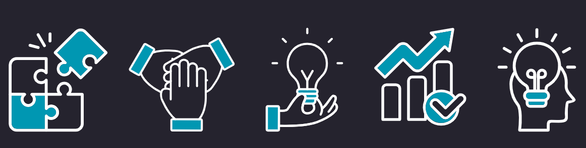

חדשנות היא שם כולל לגישה לפתרון בעיות, ובפרט במצבים של שינוי תכוף בתנאי המציאות. שקנתה בשני העשורים האחרונים אחיזה נרחבת ברחבי העולם.
מרבית פרקטיקות החדשנות מבוססות על שינוי פרדיגמה, כגון הטמעה ויישום של עקרונות פעולה מעולם תוכן אחד אל אחר, אימוץ וקליטה של כלים חדשים, מתחום זר, לתחום המוכר של הבעיה. פתרונות חדשניים מאופיינים בכך שהם מרעננים את עולם התוכן הקיים, פורצים הנחות יסוד ישנות ומייצרים קפיצות מדרגה, לעיתים אף מהפכה של ממש המבשרת על שינוי מיוחל.
נוכל לאפיין את העיסוק בחדשנות, כתהליך הנשען על מתודולוגיה סדורה:
העוסקים בחדשנות, ובפרט ארגוניים מוסדיים, נדרשים לגשת לתהליך כשבידיהם ידע בתחומי דעת מגוונים. תחילה, עליהם להקשיב לשטח, ולאפיין את הבעיה ואת שורשיה. מתוך זאת, יש ליצור הכרות מעמיקה עם עולם התוכן של הבעיה ושל עולמות תוכן אחרים. בהמשך, מצוידים במידע שאספו, עליהם להעלות רעיונות יצירתיים ולחשוב על פתרונות ישימים לבעיה. לבסוף, עליהם לבחון את הפתרונות על מנת להטמיע את המוצלחים והרלוונטים ביותר.
כאשר אנו עוסקים בחדשנות, איננו באים לטעון שלא היו פתרונות חדשניים אחרים לפני ביסוס החדשיבה החדשנית ולפני פרסומם ברבים של המודלים והרעיונות השונים.
יתרה מזאת, היו בעבר וישנם כיום יזמים ומהלכים חדשניים רבין, שעל כתפיהם אנו עומדים. שנוצרו בלי קשר לתיאוריה או לזרם רעיוני מסוים.
השינוי שאנו מבקשים להשיג הוא ליצוק בסיס תיאורטי ולהציע טכניקות מעשיות לייזום שיטתי של פתרונות, מיזמים ותהליכים חדשניים. כך, אנו מקווים, כי מופעי החדשנות לא יהיו אקראיים ולא יהיו נחלתם של יחידי סגולה בלבד- אלא נחלתו של כל מי שמבקש ליישם חשיבה רעננה ושונה בעשייתו.